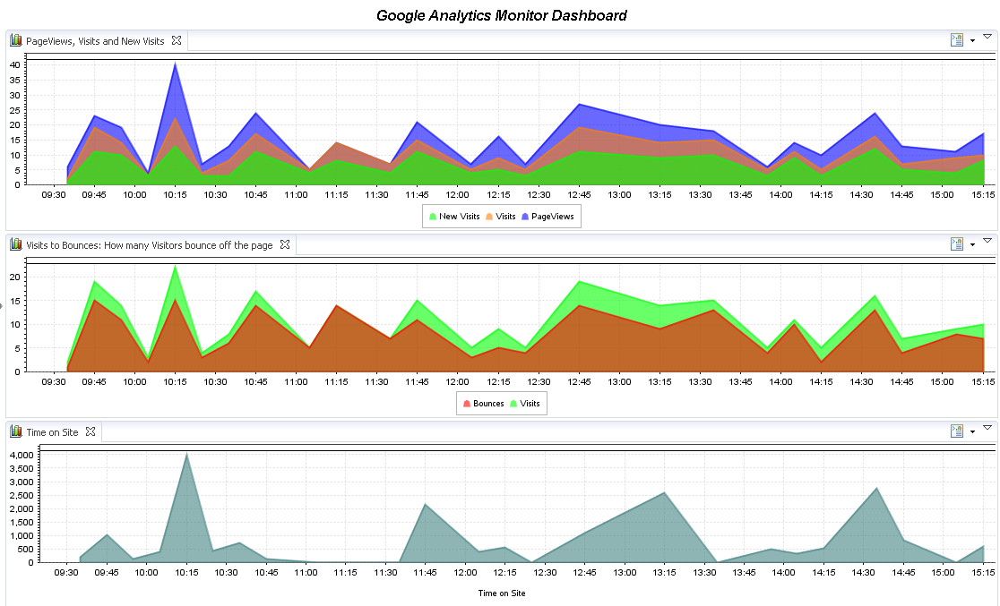

The dynaTrace FastPack for Google Analytics enables easy out-of-the-box monitoring of Google Analytics Data in your dynaTrace Environment. It allows you to correlate Analytics Data with Application Performance and Infrastructure Data. The FastPack consists of a custom Monitor, a sample System Profile and a Dashboard.
|
Name |
Google Analytics FastPack |
|
Version |
1.0 |
|
dynaTrace Version |
3.5 |
|
Author |
dynaTrace software |
|
License |
|
|
Support |
|
|
FastPack Contents |
|

The Google Analytics Dashboard visualizes data retrieved through the Google Analytics Monitor plugin.
Top Chart: Total Page Views that came from how many Visitors and how many of these were New Visitors
Middle Chart: Total Visitors and how many of them Bounced off the page
Bottom Chart: Total Time on Site
This dashboard assists you analyzing your Google Analytics Data
The Google Analytics Monitor plugin enables querying values from any website monitored with Google Analytics.The plugin retrieves values such as PageViews, Vistors, New Visitors, Bounces, Exits, Time on Page and Time on Site. This plugin allows you to view and correlate these values with application or infrastructure measures collected by dynaTrace.
Correlating these values allows you to answer questions like: Is the Bounce Rate going up because I have a problem on my landing pages? Do my PageViews go down because of slow performance transactions?
The monitor requires the following configuration settings:
Google Account Name: The Google Account that has access to Google Analytics Data
Google Account Password: The Google Account password
Website: The website that you want to monitor. You can monitor multiple websites with a single Google account. Default is to monitor the first registered website
Return Last Data Entry: If true - the last full data entry value is returned as result. If false - the delta value to the previous retrieved value is returned. The Delta allows you to get metrics as they come in. Google provides data as granular as one hour. If you specify Last Data Entry you will always get the current total number of the current hour.
Include Hours: If true - the plugin retrieves values with hourly granularity. This setting only has an impact if you specify Return Last Data Entry = true.
Log Detailed Analytics Data: if true - the monitor will log all retrieved measures from the Google API to the monitor log
The Google Analytics FastPack contains everything to get started with getting your Analytics Data to dynaTrace.
A system profile with preconfigured monitor setup to execute every 10 minutes
Google Analytics Dashboard that shows all Google Analytics data
The Google Analytics Monitor Plugin
Download and import the Dashboards and the System Profile on your dynaTrace Server
Download and import the Monitor Plugin to your dynaTrace Server